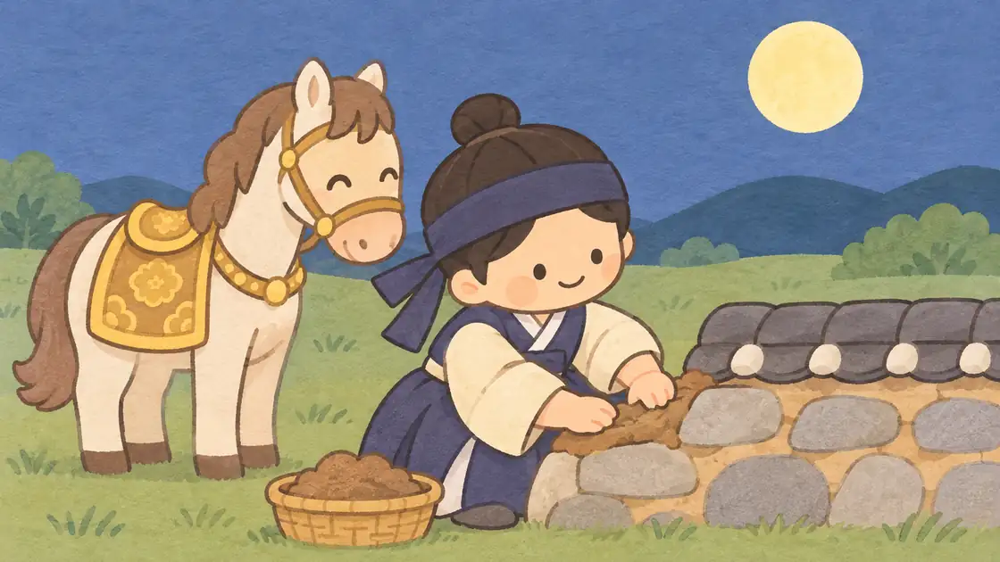
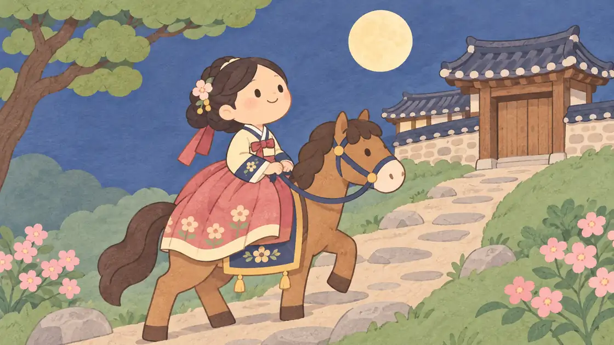

이 게시물은 쿠팡 파트너스 활동의 일환으로, 이에 따른 일정액의 수수료를 제공받습니다.


반안살 여자·남자 — 연애·결혼·일에서의 모습, 2027 반안살 띠

동네보살 편집팀 · 2026년 10월 31일 작성
반안살은 열 명 가운데 네 명 남짓
반안살은 12신살에서 장성살 바로 다음 자리에 놓이는 별로, 장군이 올라앉는 말안장에 빗대어 자리와 안정, 명예를 뜻한다고 봅니다. 기본 뜻과 찾는 법은 반안살 뜻 페이지에 있고, 이 글은 여자와 남자 사주에서의 모습과 반안살이 드는 해를 다룹니다.
동네보살이 1950~2009년생 사주 262,980개를 세어 보니 반안살이 있는 사주는 38.5%였습니다. 태어난 시각을 모르면 28.5%입니다. 열 명 가운데 예닐곱이 가진 장성살과 달리, 반안살은 띠나 일지 자체에서 저절로 나오지 않아 조금 덜 흔합니다. 반안살 글자는 늘 진·술·축·미 가운데 하나이고, 이 네 글자는 모두 오행으로 흙(토)입니다.
흙의 글자라서 쌓는 힘으로 읽습니다
반안살 글자가 모두 흙이라는 점은 반안살을 읽는 실마리가 됩니다. 흙은 한 번에 높이 솟지 않고 조금씩 쌓여 단단해집니다. 그래서 반안살이 있는 사람은 큰 한 번의 성공보다 몇 년에 걸친 경력과 평판으로 자리를 얻는 편으로 봅니다.
이 성향은 이직이나 창업 같은 큰 갈림길에서 드러납니다. 반안살이 있는 사람은 새 자리의 조건을 오래 따져 보고, 옮긴 뒤에는 쉽게 다시 움직이지 않습니다. 남들이 보기엔 느려 보여도, 한 자리에서 오래 쌓은 신뢰가 다음 자리를 불러오는 식으로 길이 이어집니다.

반안살 여자의 연애와 결혼
반안살 여자는 연애를 시작하기까지 시간이 걸리는 편입니다. 첫눈에 반하기보다 몇 번 만나 보며 이 사람이 약속을 지키는지, 생활이 안정적인지를 먼저 봅니다. 그래서 주변에서 눈이 높다는 말을 듣기도 하지만, 실제로는 높은 조건이 아니라 믿을 수 있는 사람을 찾는 것에 가깝습니다.
결혼에서는 둘이 함께 자리를 잡아 가는 그림을 중요하게 여깁니다. 집, 저축, 아이 계획처럼 앞날을 함께 설계하는 대화가 통하면 마음이 빨리 열립니다. 반대로 계획 없이 흘러가는 관계에서는 쉽게 지치니, 연애 초반에 서로의 생활 계획을 편하게 나눠 보면 좋습니다.
일하는 반안살 여자는 승진이나 자격증처럼 단계를 밟는 목표가 있을 때 힘이 납니다. 결혼과 일 가운데 하나를 고르라는 말에 흔들리기보다, 두 가지의 순서를 스스로 정해 두는 편이 반안살 여자에게 맞습니다.
반안살 남자는 체면보다 기반을 봅니다
반안살 남자는 겉으로 드러나는 직함보다 실제로 쌓인 기반을 중요하게 여깁니다. 돈을 모으는 방식도 한 번에 크게 벌기보다 꾸준히 불려 가는 쪽을 택하는 편입니다.
연애에서는 듬직하고 말수가 적은 편이라 마음을 표현하는 데 서툴 수 있습니다. 좋아하는 마음을 말보다 행동으로, 예를 들어 데려다주기나 미리 챙겨 두기로 보여 주는 경우가 많습니다. 상대가 서운해하지 않도록 고마운 마음을 한 문장이라도 말로 꺼내 주면 관계가 훨씬 가벼워집니다.
결혼은 일과 생활의 기반이 섰다고 느낄 때 결정하는 편입니다. 이 기준이 너무 높아 시기를 미루게 된다면, 완벽하게 갖춘 뒤가 아니라 둘이 함께 갖춰 가는 것도 반안살의 길이라는 점을 떠올려 보세요.
장성살 옆의 반안살, 홀로 있는 반안살
반안살은 장성살 바로 다음 글자이고, 같은 표본에서 반안살이 있는 사람의 61.3%는 장성살도 함께 가지고 있었습니다. 함께 있으면 앞에서 이끄는 힘과 얻은 자리를 지키는 힘을 함께 갖춘 짜임으로 읽습니다. 팀을 꾸리고 그 팀을 오래 유지하는 일에 잘 맞습니다.
장성살 없이 반안살만 있다면, 앞에 나서기보다 옆에서 받쳐 주는 자리에서 더 편안합니다. 회사의 참모나 살림을 책임지는 사람처럼, 드러나지 않지만 없으면 안 되는 역할에서 반안살의 품위가 잘 드러납니다. 장성살 이야기는 장성살 여자·남자에 따로 정리했습니다.
2027년 정미년, 호랑이·말·개띠에게 반안살이 듭니다
그해의 땅 글자가 내 띠 묶음의 반안살 글자와 같으면 그해를 반안살의 해로 읽는 풀이가 있습니다. 2027년은 정미(丁未)년이고, 미(未)는 인오술 묶음, 곧 호랑이·말·개띠의 반안살 글자입니다.
이 풀이를 따르면 2027년 호랑이·말·개띠는 그동안 쌓아 온 일이 자리와 인정으로 이어지기 쉬운 해입니다. 2026년 병오년이 이 세 띠에게 장성살의 해였으니, 앞장서서 벌인 일을 이듬해에 다지는 순서로 볼 수 있습니다. 띠가 아니어도 태어난 날의 땅 글자가 인·오·술인 분은 같은 흐름으로 읽습니다. 예를 들어 쥐띠라도 태어난 날이 오(午)일이라면 일지로 보아 2027년이 반안살의 해가 됩니다. 반대로 말띠라도 일지가 자(子)라면 일지로는 2027년이 천살의 해라서, 두 기준을 함께 놓고 보는 것이 좋습니다.
년생별로는 1974년생 호랑이띠, 1990년생 말띠, 1982년생 개띠 2027 운세에서 한 해 흐름을 더 자세히 볼 수 있습니다.

반안살이 있는 사람의 돈 습관
반안살은 자리와 함께 그 자리를 받치는 살림의 기반도 중요하게 여기는 별입니다. 그래서 반안살이 있는 사람은 큰 수익을 노리기보다 매달 일정하게 모으는 쪽에서 마음이 편합니다. 적금, 연금처럼 오래 묵히는 돈에 손이 잘 가는 편입니다.
다만 안정을 아끼는 만큼 한번 정한 방식을 오래 바꾸지 않아, 더 나은 선택이 생겨도 그냥 지나칠 때가 있습니다. 한 해에 한 번, 예를 들어 생일 무렵에 내 돈의 흐름을 한 장으로 정리해 보는 날을 정해 두면 반안살의 꾸준함이 놓치는 것 없이 쌓입니다.
부부나 연인 사이라면 반안살인 쪽이 살림의 큰 틀을 잡고, 상대가 새 정보를 가져오는 식으로 나누면 서로의 장점이 잘 맞물립니다.
반안살이 드는 해를 보내는 법
반안살의 해에는 새 판을 벌이기보다 이미 가진 것을 정리하고 굳히는 일이 잘 풀린다고 봅니다. 미뤄 둔 자격증, 오래 다닌 곳에서의 승진 면담, 집 계약처럼 문서로 남는 일을 이 해에 챙겨 보세요.
편안한 해일수록 익숙한 자리에 머무르려는 마음도 커집니다. 한 해에 새 배움 하나를 정해 두면 반안살의 안정이 정체로 흐르지 않습니다.
내 사주에 반안살이 있는지, 어느 기둥인지는 반안살 계산 칸에서 바로 확인할 수 있습니다.
띠 묶음별 반안살 글자와 반안살이 드는 해
태어난 해(띠)나 태어난 날의 땅 글자가 속한 묶음으로 봅니다. 해의 간지는 동네보살 만세력 기준입니다
1950~2009년생 사주 262,980개로 센 반안살
날마다 열두 시진을 모두 넣어 셌습니다
참고한 자료
사주 — 일간 중심으로 십이신살·길성 등을 종합해 판단 — 한국민족문화대백과사전(한국학중앙연구원)
간지(干支) — 천간과 지지, 육십갑자 — 한국민족문화대백과사전(한국학중앙연구원)
달력자료(월력요항) 2027년 — 음력 정미년 — 한국천문연구원 천문우주지식정보
자주 묻는 질문
반안살 여자는 결혼이 늦나요?
늦다기보다 믿을 수 있는 사람과 생활의 계획이 서야 결정하는 편입니다. 앞날을 함께 설계하는 대화가 통하는 상대를 만나면 결정은 오히려 빠를 수 있습니다.
2027년에 반안살이 드는 띠는 무엇인가요?
2027년 정미년의 미는 인오술 묶음의 반안살 글자라 호랑이·말·개띠에게 반안살의 해가 됩니다. 태어난 날의 땅 글자가 인·오·술인 분도 같은 흐름으로 봅니다.
반안살은 얼마나 흔한가요?
1950~2009년생 사주를 모두 세어 보면 태어난 시각을 넣었을 때 38.5%, 시각을 모를 때 28.5%가 반안살을 가지고 있습니다.
반안살이 있으면 공무원이 잘 맞나요?
반안살은 단계를 밟아 자리를 얻는 기운이라 공직, 공기업, 큰 조직의 관리직처럼 경력이 곧 자리로 이어지는 곳과 잘 맞는다고 봅니다. 다만 직업은 사주 전체와 본인의 관심을 함께 보고 정하는 것이 좋습니다.
반안살 남자는 표현이 서툰가요?
말보다 행동으로 마음을 보이는 편이라 그렇게 느껴질 수 있습니다. 데려다주기나 미리 챙겨 두기처럼 행동으로 드러나는 마음을 알아봐 주고, 반안살 남자 쪽에서도 고마운 마음을 한 문장씩 말로 꺼내 주면 관계가 편안해집니다.